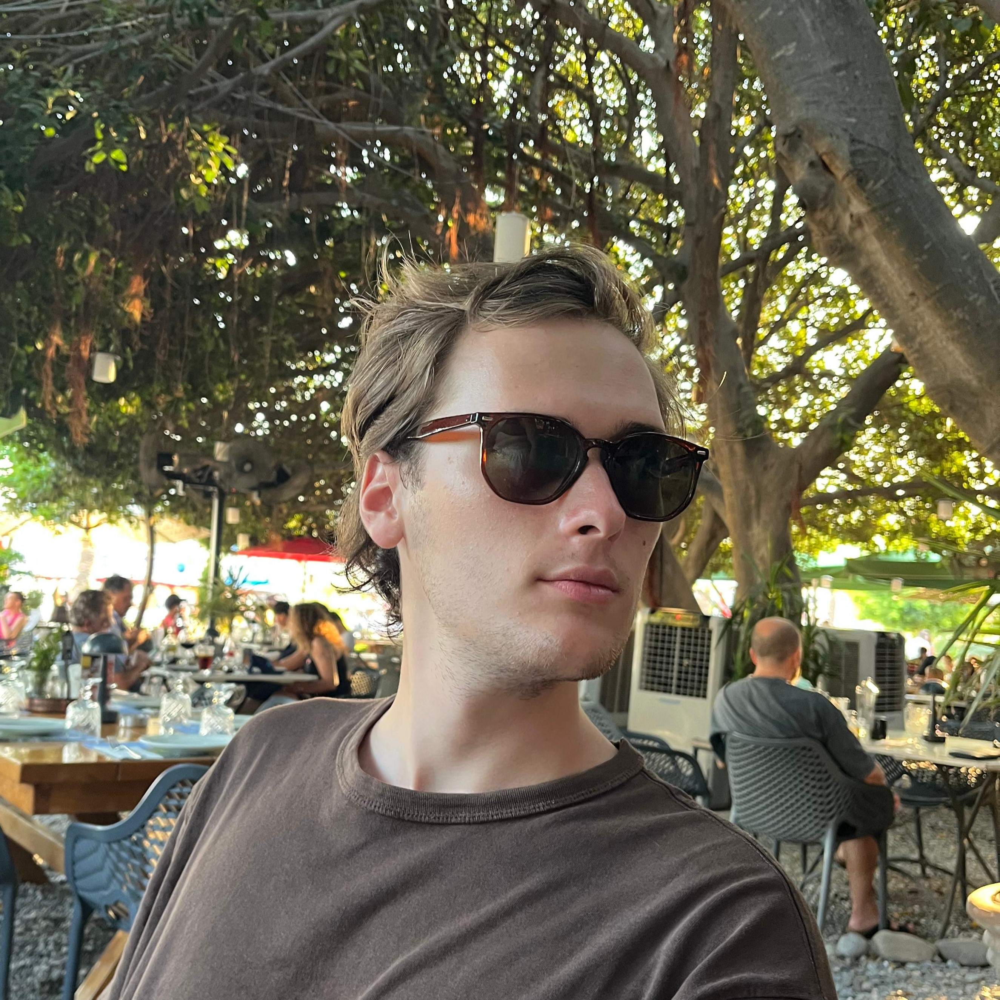

Welcome to My Personal Website!
Hello, welcome again to my personal web page for the web-based GIS course.
On this website, I aimed to create a simple web page that describes myself using HTML and CSS programming languages, along with integrating an OpenLayers dataset.
